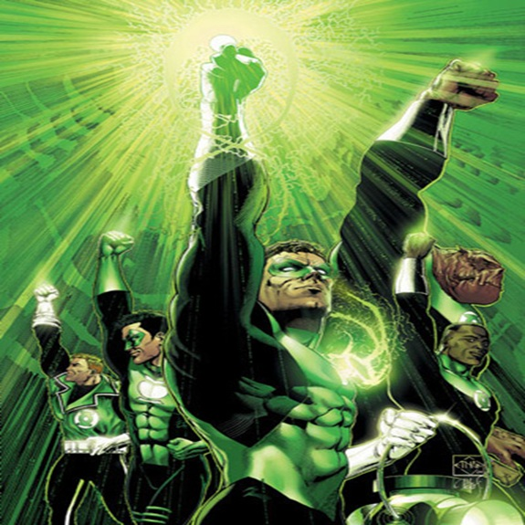

-
Batman
Batman é um icônico personagem dos quadrinhos da DC Comics, criado por Bob Kane e Bill Finger em 1939. Sua identidade secreta é Bruce Wayne, um bilionário de Gotham City que, após testemunhar o assassinato de seus pais na infância, dedica sua vida à luta contra o crime. Diferente de muitos super-heróis, Batman não possui superpoderes, mas compensa isso com sua inteligência estratégica, habilidades de combate excepcionais e um vasto arsenal de tecnologia avançada. Atuando como um vigilante mascarado, ele usa o medo como arma contra criminosos, sendo auxiliado por aliados como Alfred Pennyworth, Robin e o Comissário Gordon. Sua galeria de vilões inclui figuras marcantes como Coringa, Charada e Duas-Caras. A dualidade entre Bruce Wayne e Batman, além de seu código moral rígido e sua constante luta contra as próprias sombras, fazem dele um dos personagens mais complexos e fascinantes da cultura pop.
ATK/ 2800 DEF/ 3100 -
Superman
Superman é um dos super-heróis mais icônicos da cultura pop, criado por Jerry Siegel e Joe Shuster em 1938. Nascido no planeta Krypton com o nome de Kal-El, ele foi enviado à Terra por seus pais pouco antes da destruição de seu mundo. Criado por Jonathan e Martha Kent na pacata cidade de Smallville, adotou a identidade de Clark Kent e desenvolveu um forte senso de justiça. Graças à radiação do Sol amarelo da Terra, possui poderes sobre-humanos, incluindo força descomunal, velocidade incrível, visão de calor, sopro congelante e a habilidade de voar. Trabalha como jornalista no Planeta Diário, enquanto protege Metrópolis e o mundo de ameaças diversas, incluindo seu arqui-inimigo Lex Luthor. Representando esperança, justiça e altruísmo, Superman é símbolo do ideal heroico e um dos personagens mais importantes da história dos quadrinhos.
ATK/ 3500 DEF/ 3100 -
Mulher Maravilha

Mulher-Maravilha é uma das super-heroínas mais icônicas da DC Comics, criada por William Moulton Marston em 1941. Seu verdadeiro nome é Diana, princesa das Amazonas da ilha de Themyscira, uma sociedade isolada e composta apenas por guerreiras imortais. Filha da rainha Hipólita e, em algumas versões, do próprio Zeus, Diana é treinada desde a infância para ser uma combatente excepcional. Quando descobre o mundo dos homens e suas injustiças, decide usar suas habilidades para promover a paz e a justiça, tornando-se a Mulher-Maravilha. Possui força sobre-humana, velocidade, reflexos aprimorados e uma grande resistência, além de ser uma especialista em combate corpo a corpo. Seu arsenal inclui o Laço da Verdade, braceletes indestrutíveis e a espada da deusa Atena. Como membro essencial da Liga da Justiça, representa valores como igualdade, coragem e compaixão, sendo um símbolo de empoderamento e heroísmo na cultura pop.
ATK/ 2700 DEF/ 3000 -
Flash
Flash é um dos super-heróis mais icônicos da DC Comics, conhecido como o "Homem Mais Rápido Vivo". Criado por Gardner Fox e Harry Lampert em 1940, várias pessoas já assumiram sua identidade, mas a versão mais popular é Barry Allen. Barry era um cientista forense que ganhou seus poderes após ser atingido por um raio e banhado por produtos químicos, conectando-o à Força de Aceleração, uma energia cósmica que lhe concede velocidade sobre-humana. Com essa habilidade, ele pode correr em velocidades inimagináveis, atravessar objetos, viajar no tempo e até acessar realidades alternativas. Flash protege Central City e enfrenta vilões como o Flash Reverso, Capitão Frio e Gorila Grodd. Além de seu senso de humor e espírito altruísta, ele é um membro essencial da Liga da Justiça, representando otimismo, heroísmo e a busca incansável pela justiça.
ATK/ 2700 DEF/ 2500 -
Lanterna Verde
Lanterna Verde é um dos super-heróis mais emblemáticos da DC Comics, criado por Bill Finger e Martin Nodell em 1940. O título "Lanterna Verde" não pertence a um único herói, mas a diversos personagens que fazem parte da Tropa dos Lanternas Verdes, uma força policial intergaláctica comandada pelos Guardiões do Universo e movida pela força de vontade. O mais famoso portador do anel é Hal Jordan, um piloto de testes escolhido pelo anel energético de um Lanterna moribundo para se tornar o novo protetor do setor 2814, que inclui a Terra. O anel concede ao usuário a capacidade de criar qualquer construto imaginável, voar e sobreviver no espaço, sendo limitado apenas pela força de vontade de seu portador. Outros Lanternas Verdes notáveis incluem John Stewart, Guy Gardner, Kyle Rayner e Jessica Cruz. Com sua coragem inabalável e compromisso com a justiça, Lanterna Verde é um dos membros mais poderosos da Liga da Justiça e um defensor do equilíbrio no universo.
ATK/ 2800 DEF/ 2900 -
Aquaman
Aquaman é um dos super-heróis mais icônicos da DC Comics, criado por Paul Norris e Mort Weisinger em 1941. Seu verdadeiro nome é Arthur Curry, filho da rainha atlante Atlanna e de um humano, Tom Curry. Como herdeiro do trono de Atlântida, possui habilidades sobre-humanas, como força, velocidade e resistência aprimoradas, além da capacidade de respirar debaixo d'água e se comunicar telepaticamente com a vida marinha. Embora muitas vezes subestimado, Aquaman é um guerreiro formidável, empunhando o poderoso Tridente de Netuno, que lhe concede ainda mais poder. Seu dever é equilibrar sua herança humana e atlante, protegendo tanto os oceanos quanto a superfície de ameaças como o Mestre do Oceano e Arraia Negra. Como membro essencial da Liga da Justiça, ele simboliza a conexão entre os dois mundos e a luta pela preservação dos mares.
ATK/ 2400 DEF/ 2600 -
Caçador de Marte
Caçador de Marte, também conhecido como J'onn J'onzz, é um dos super-heróis mais poderosos e enigmáticos da DC Comics, criado por Joseph Samachson e Joe Certa em 1955. Originário do planeta Marte, J'onn foi transportado acidentalmente para a Terra por um cientista humano e, incapaz de retornar ao seu mundo, decidiu usar suas habilidades para proteger a humanidade. Possui um vasto leque de poderes, incluindo superforça, telepatia, intangibilidade, invisibilidade, voo e mudança de forma, além de uma inteligência excepcional. Apesar de sua imensa capacidade, carrega uma profunda melancolia devido à destruição de sua raça, o que o torna um personagem introspectivo e solitário. Adotando a identidade humana do detetive John Jones, ele trabalha para compreender e se integrar à sociedade terrestre. Como um dos membros fundadores da Liga da Justiça, o Caçador de Marte é um símbolo de empatia, sabedoria e compromisso com a justiça, apesar de sua vulnerabilidade extrema ao fogo.
ATK/ 3000 DEF/ 2800